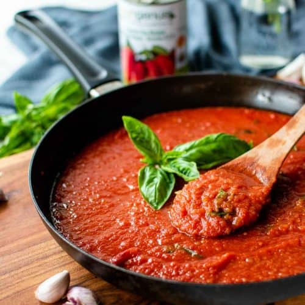

Easy Tomato Sauce Recipe

Nothing better to add to your pasta than some tomato sauce, and after eating this recipe you are sure to never go back to eating the industrialised thing
Ingredients
- 5 pounds tomatoes
- 3/4 teaspoon salt
- 2 tablespoons olive oil
- 1 tablespoon tomato paste
- 1 garlic clove, halved
- 1 basil sprig
- 1 bay leaf
It may look like a lot but worry not, it is very simple and easy to transform these ingredients into a delicious sauce
Step-By-Step
- Cut the tomatoes in half horizontally, squeezing out the seeds
- Press the cut side of the tomato against the large holes of a box grater and grate the tomato flesh into a bowl
- Put the tomato pulp in a low wide saucepan over high heat
- Add salt, olive oil, tomato paste, garlic, basil and bay leaf.
- Let it boil, then lower the heat to a brisk simmer
- Reduce the sauce by almost half, stirring occasionally, to produce about 2.5 cups
- Taste and adjust salt
You may keep it in the refrigerator for up to 5 days
With this recipe you will have some delicious homemade tomato sauce to go with anything you desire!
And you know what goes GREAT with some of this sauce? This amazing Homemade Pasta! Try it out and let us know what you think!